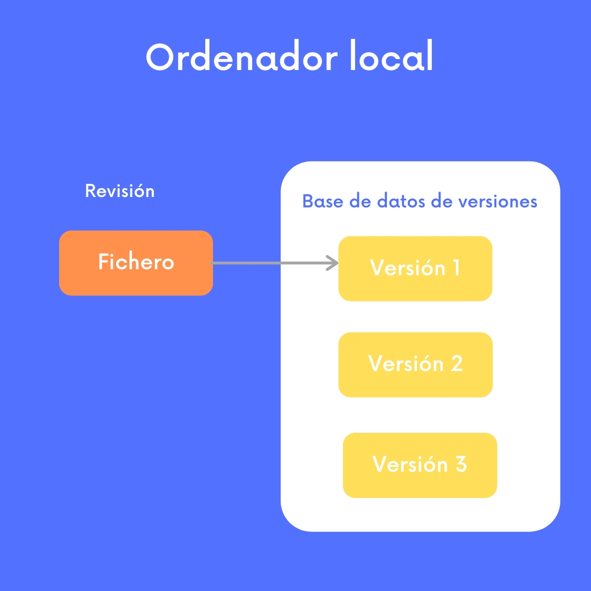

Exprimiendo Git: ¿Qué es un sistema de control de versiones?
¿Alguna vez te has preguntado cuál es la diferencia entre git revert y git reset --hard? ¿No sueles usar git rebase por miedo a lo que pueda pasar? Espero que esta serie de posts te ayude a repasar los fundamentos de Git y así adquirir seguidad y exprimir al máximo tu flujo de trabajo.
Git es una herramienta para el control de versiones. Empecemos por repasar qué es un control de versiones y por qué son importantes en los proyectos de software.
Control de versiones en los proyectos de Software
El control de versiones es el arte de manejar cambios en la información. Ha sido desde siempre una herramienta crítica para los programadores ya que construir software es un proceso creativo que implica evolucionar con el tiempo el código fuente sobre el que se está trabajando. Es más, en la gran mayoría de casos, múltiples personas trabajan en un mismo proyecto al mismo tiempo. Es decir se van añadiendo en paralelo líneas y ficheros aquí, eliminando otras allá… A veces, incluso puede haber dos programadores trabajando al mismo tienpo en un fichero. Todo esto hace que se generen múltiples versiones de un proyecto en un mismo instante de tiempo, pero al final, el producto es sólo uno y queremos controlar qué aportaciones de las que ha ido haciendo cada miembro del equipo van a componer esta versión final. Como puedes ver se necesita un buen sistema para manejar el caos potencial.
Un sistema de control de versiones nos ayuda a mantener la consistencia de los datos a lo largo del tiempo, generando un historial que nos ayuda a:
- Encontrar en qué momento se ha introducido un error y con qué cambio,
- Recuperar una idea previamente descartada
- Comparar versiones diferentes de los ficheros de un proyecto
- Obtener una copia de seguridad en caso de que hayamos perdido
Para poner las cosas en perspectiva, repasemos diferentes tipos de sistemas de control de versiones.
Sistema de Control de Versiones en local
Un manera muy simple de mantener un control de versiones de nuestros ficheros sería copiándolos en otro directorio poniendo, en el mejor de los casos una fecha que indicaría de cuando es la versión. Como es evidente, este enfoque aunque simple, puede dar lugar a muchos fallos.
Los sistemas de control de versiones en local surgieron precisamente para atajar este problema. RCS es un ejemplo. Este programa gestiona revisiones de documentos de texto automatizando el almacenamiento, recuperación de ficheros, registro de actividad e identificación de revisiones.
En definitiva, RCS gestiona grupos de revisión; es decir, un conjunto de documentos de texto llamados revisiones que han ido evolucionando a partir de ellas mismas al modificar un fichero. Se crea una revisión editando una revisión existente. Además, RCS organiza las revisiones en un árbol ancestral en el que la raíz es la primirea revisión y las ramas indican la revisión a partir de la que ha evolucionado una nueva.

Sistema de Control de Versiones centralizado
Cuando necesitas trabajar de manera colaborativa en equipo, un sistema como el anterior no es adecuado ya que no permite gestionar las diferentes versiones entre diferentes ordenadores. Para solucionar esto llegaron los sistemas de control de versiones centralizados que permiten a los programadores acceder al proyecto a través de la red.
Estos sistemas alojan archivos y directorios en un repositorio central que sirve como único punto de almacenamiento y sincronización de datos.
Igual que en el caso anterior, el repositorio organiza la información siguiendo una estructura de árbol, estableciendo así una jerarquía de ficheros y directorios.
Por otro lado, múltiples clientes puden conectarse al repositorio y hacer operaciones de lectura y escritura sobre sus archivos. Una operación de escritura, pone a disposición de otros clientes esta información; mediante una operación de lectura un cliente recibe información de los demás.
Hasta ahora, esto se parece mucho a la definición de un simple servidor de ficheros, y lo cierto es que el repositorio es un tipo de servidor de ficheros pero con esteroides ya que además, recuerda cada cambio registrado en él: cambios en los ficheros, cambios en la estructura del árbol de directorios, etc.
Cuando un cliente lee datos del repositorio, normalmente ve únicamente la última versión del árbol de directorios pero también tiene la posibilidad de ver los estados previos del sistema. Se puede por tanto hacer preguntas del tipo, ¿qué contenía este directorio el viernes pasado? o ¿quién a sido la última persona en modificar este archivo?
Para ponernos en contexto, veamos cómo funciona Subversion, sistema de control de versiones, muy popular durante las últimas dos décadas antes de Git.
Para trabajar de manera colaborativa, Subversion permite crear working copies - o copias de trabajo - que normalmente son un rama del árbol completo de ficheros que nos hemos descargado desde el repositorio central en nuestro sistema local. Una vez hecho esto, podemos modificar cualquier fichero o carpeta sin peligro de interferir con los demás. Subversión hará públicos para el resto de clientes nuestros cambios únicamente cuando lo digamos de manera explícita y entonces nuestro cambios se escribirán en el repositorio central.
Si otras personas publican sus cambios, Subversion nos ayuda a integrar estos cambios en nuestra copia de trabajo siguiendo un modelo copiar-modificar-mergear (copy-modify-merge).
Por otra parte, una copia de trabajo contiene un subdirectorio, comocido como el directorio administrativo de la copia de trabajo que ayudan a Subversion a reconocer qué archivos contienen cambios no publicados y qué archivos están desactualizados con respecto al trabajo de otros.
Para entender una de las principales diferencias entre Git y un sistema centralizado como Subversion, hay que destacar que un repositorio típico de subversion a menudo contiene los archivos para varios proyectos, generalmente cada proyecto es un subdirectorio en el sistema de archivos del repositorio. Es esta organización, una copia de trabajo normalmente corresponderá a un surbárbol concreto del respositorio.
Por ejemplo, en la figura de abajo tenemos representado el árbol de directorios de un repositorio central de subversion que gestiona dos proyectos: la rama gatitos y la rama perritos, con sus respectivas subcarpetas que contendrían ficheros con código para representar las actividades típicas de un gato o un perro.
Si creáramos una working copy del repositorio para trabajar en el proyecto gatitos, el repositorio central nos crearía únicamente una copia del subárbol “gatitos”